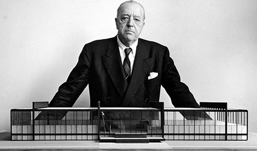
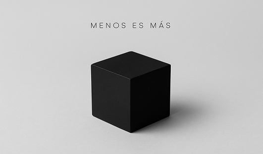
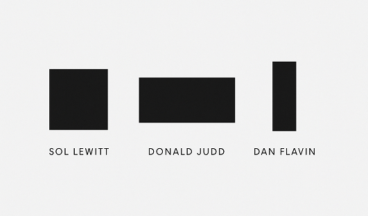

Historia del Minimalismo
- Orígenes
- Años 60
- Bauhaus
- Arte oriental
Leer más

Principios del Minimalismo
- “Menos es más”
- Geometría simple
- Orden
- Espacio en blanco
- Silencio visual
Leer más

Autores Destacados
- Sol LeWitt
- Donald Judd
- Dan Flavin
Ver autores